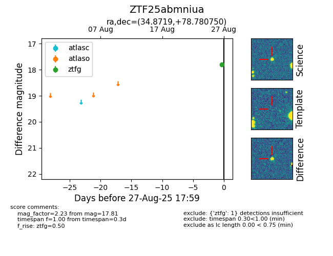

Target ZTF25abmniua at 2025-08-27 17:59, see:
FINK: fink-portal.org/ZTF25abmniua
Lasair: lasair-ztf.lsst.ac.uk/objects/ZTF25abmniua
ALeRCE: alerce.online/object/ZTF25abmniua
alt names
ZTF25abmniua (ztf,fink)
coordinates:
equatorial (ra, dec) = (34.8719,+78.78075)
galactic (l, b) = (127.2975,+16.66248)
photometry
last ztfg=17.81
1 ztfg detections
